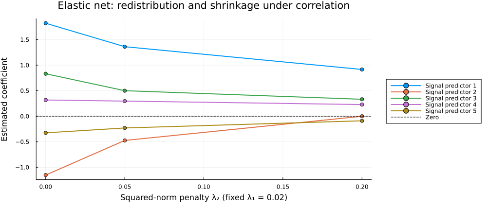

Elastic net
Highly correlated predictors can carry similar information. Lasso may select a small subset and assign most of the effect to it. Elastic net adds a squared coefficient penalty, which discourages large individual coefficients and can distribute effects more evenly across correlated predictors. The figure holds the lasso penalty fixed while increasing this additional shrinkage.

Elastic net with proximal gradient descent, accelerated proximal gradient descent and coordinate descent on a normalized least-squares problem with correlated features:
$\min_b \; \frac{1}{2n}\|y - Xb\|^2 + \lambda_1 \|b\|_1 + \frac{\lambda_2}{2}\|b\|^2$.
ElasticNet(λ1, λ2) is accepted by ProximalGradientDescent, AccProxGradDescent and CDSolver. This page solves the problem with AccProxGradDescent and ProximalGradientDescent on a dense Vector, and with CDSolver on a dense Vector and on a SparseIterate; see Supported problems. Accuracy is checked with the objective computed from X and y and with the KKT residual computed directly from X, y, the penalty levels and coefficients, not with the solvers' converged flags.
using LinearAlgebra, Random, ProximalBase, ProximalSolversSimulating correlated predictors
The zero-intercept model has 200 observations, 50 predictors, five nonzero coefficients, and Gaussian noise with standard deviation 0.1. Adjacent predictor columns have correlation 0.9. In the objective, $\lambda_1$ encourages zeros and $\lambda_2$ shrinks the squared Euclidean norm. All fits below use the same data and fixed $\lambda_1=0.02$.
rng = Xoshiro(2026)
n, p = 200, 50
X = randn(rng, n, p)
for j in 2:p # neighbouring columns with correlation 0.9
X[:, j] .= 0.9 .* X[:, j - 1] .+ sqrt(1 - 0.9^2) .* X[:, j]
end
beta_true = vcat([2.0, -1.5, 1.0, 0.5, -0.5], zeros(p - 5))
y = X * beta_true .+ 0.1 .* randn(rng, n)
f = (1 / n) * LeastSquaresLoss(y, X)
lambda1, lambda2 = 0.02, 0.05
g = ElasticNet(lambda1, lambda2)ProximalBase.ElasticNet{Float64, Nothing}(0.02, 0.05, nothing, ProximalBase.NormL1{Float64, Nothing}(0.02, nothing))The objective from the data, and the residual of the optimality condition 0 ∈ Xᵀ(Xβ - y)/n + λ2 β + λ1 ∂‖β‖₁, evaluated directly from the data and coefficients.
objective(beta) = sum(abs2, y - X * beta) / (2n) + lambda1 * sum(abs, beta) + lambda2 / 2 * sum(abs2, beta)
function elasticnet_residual(beta)
grad = X' * (X * beta - y) / n
maximum(iszero(beta[j]) ? max(abs(grad[j]) - lambda1, 0.0) :
abs(grad[j] + lambda2 * beta[j] + lambda1 * sign(beta[j])) for j in eachindex(beta))
endelasticnet_residual (generic function with 1 method)Fitting and checking the objective
options = ProximalOptions(maxiter = 10_000, ftol = 1e-14, xtol = 1e-12, gradtol = 1e-10)
beta_apg, beta_pgd = zeros(p), zeros(p)
apg = solve!(beta_apg, f, g, AccProxGradDescent(), options)
pgd = solve!(beta_pgd, f, g, ProximalGradientDescent(), options)
@assert apg.minimizer === beta_apg && pgd.minimizer === beta_pgd
@assert elasticnet_residual(beta_apg) <= 1e-6 && elasticnet_residual(beta_pgd) <= 1e-6the reported objective is the one computed from the data, up to rounding
@assert isapprox(apg.minimum, objective(beta_apg); rtol = 1e-10)
@assert isapprox(pgd.minimum, objective(beta_pgd); rtol = 1e-10)the two runs reach the same point of this strongly convex problem
@assert maximum(abs, beta_apg - beta_pgd) <= 1e-5Coordinate descent
CDSolver solves the same problem, from zeros, on a dense Vector and on a SparseIterate; the design stays dense, and the SparseIterate starts with no active coordinates, which the solver discovers. For least squares, converged = true is the solver's change test on the coefficients over a pass, not a certificate of optimality, so each run is checked on its own with the KKT residual, the objective and its agreement with the accelerated proximal gradient solution.
cd_solver = CDSolver(order = :cyclic, tol = 1e-10)
beta_cd = zeros(p)
x_sparse = SparseIterate(p)
cd_dense = solve!(beta_cd, f, g, cd_solver)
cd_sparse = solve!(x_sparse, f, g, cd_solver)
@assert cd_dense.minimizer === beta_cd && cd_sparse.minimizer === x_sparse
@assert elasticnet_residual(beta_cd) <= 1e-6 && elasticnet_residual(Vector(x_sparse)) <= 1e-6the reported objective is the one computed from the data, up to rounding
@assert isapprox(cd_dense.minimum, objective(beta_cd); rtol = 1e-10)
@assert isapprox(cd_sparse.minimum, objective(Vector(x_sparse)); rtol = 1e-10)both runs reach the accelerated proximal gradient solution
@assert maximum(abs, beta_cd - beta_apg) <= 1e-5
@assert maximum(abs, Vector(x_sparse) - beta_apg) <= 1e-5The elastic-net solution has a smaller Euclidean norm than the lasso solution with the same ℓ1 level, for the exact minimizers: comparing the two objectives at the two solutions shows ‖βEN‖ ≤ ‖βlasso‖.
beta_lasso = zeros(p)
solve!(beta_lasso, f, NormL1(lambda1), AccProxGradDescent(), options)
@assert norm(beta_apg) < norm(beta_lasso)Ridge with coordinate descent
Setting the ℓ₁ level to zero gives ridge regression. With CDSolver, use SqrNormL2(lambda2) to add the penalty $\lambda_2 \|b\|_2^2/2$ to the normalized least-squares loss.
beta_ridge = zeros(p)
ridge = solve!(beta_ridge, f, SqrNormL2(lambda2), cd_solver)
beta_reference = (X' * X / n + lambda2 * I) \ (X' * y / n)
@assert ridge.minimizer === beta_ridge
@assert norm(beta_ridge - beta_reference, Inf) <= 1e-7Reading the shrinkage paths
A line follows one of the five planted signal coefficients. The level 0 is the ordinary lasso, 0.05 is the elastic-net fit above, and 0.2 is one additional independent solve from zeros. Connected points guide the eye; they are not an exhaustive regularization path. Correlation couples the coordinates, so individual coefficients need not shrink monotonically even though the fitted coefficient norm cannot increase as the squared-norm penalty increases, at exact minimizers.
using Plots
lambda2_levels = [0.0, lambda2, 0.2]
beta_more_shrinkage = zeros(p)
path_result = solve!(beta_more_shrinkage, f, ElasticNet(lambda1, last(lambda2_levels)),
AccProxGradDescent(), options)
path_gradient = X' * (X * beta_more_shrinkage - y) / n
path_kkt = maximum(iszero(beta_more_shrinkage[j]) ? max(abs(path_gradient[j]) - lambda1, 0.0) :
abs(path_gradient[j] + last(lambda2_levels) * beta_more_shrinkage[j] +
lambda1 * sign(beta_more_shrinkage[j])) for j in eachindex(beta_more_shrinkage))
path_objective = sum(abs2, y - X * beta_more_shrinkage) / (2n) +
lambda1 * sum(abs, beta_more_shrinkage) + last(lambda2_levels) * sum(abs2, beta_more_shrinkage) / 2
@assert path_kkt <= 1e-6 && isapprox(path_result.minimum, path_objective; rtol=1e-10)
path_coefficients = hcat(beta_lasso, beta_apg, beta_more_shrinkage)
primary_figure = plot(lambda2_levels, permutedims(path_coefficients[1:5, :]);
marker=:circle, linewidth=2, label=permutedims(["Signal predictor $j" for j in 1:5]),
xlabel="Squared-norm penalty λ₂ (fixed λ₁ = 0.02)", ylabel="Estimated coefficient",
title="Elastic net: redistribution and shrinkage under correlation",
legend=:outerright, size=(1000, 430))
hline!(primary_figure, [0.0]; color=:black, linestyle=:dash, label="Zero")
savefig(primary_figure, "elastic_net.svg")
nothing
for (name, r, beta) in (("AccProxGradDescent", apg, beta_apg), ("ProximalGradientDescent", pgd, beta_pgd))
println(rpad(name, 24), " iterations = ", r.iterations, ", KKT residual = ", elasticnet_residual(beta),
", nonzeros = ", count(!iszero, beta))
end
for (name, r, beta) in (("CDSolver, Vector", cd_dense, beta_cd), ("CDSolver, SparseIterate", cd_sparse, Vector(x_sparse)))
println(rpad(name, 24), " passes = ", r.passes, ", KKT residual = ", elasticnet_residual(beta),
", nonzeros = ", count(!iszero, beta))
endAccProxGradDescent iterations = 148, KKT residual = 1.0194417358888597e-9, nonzeros = 15
ProximalGradientDescent iterations = 469, KKT residual = 4.301898701847273e-9, nonzeros = 15
CDSolver, Vector passes = 146, KKT residual = 8.447157903712643e-11, nonzeros = 15
CDSolver, SparseIterate passes = 146, KKT residual = 8.447157903712643e-11, nonzeros = 15Limitations
Elastic net still depends on predictor scaling and the two penalty levels. Its squared-norm term can stabilize coefficients, but it does not identify causal effects or guarantee the true support. Correlated predictors can share effects in ways that differ from their simulated coefficients. The fixed levels illustrate shrinkage; tuning for prediction requires validation beyond these training data.
What we learned
The lasso and squared-norm terms serve different purposes: sparsity and shrinkage. A short path makes their interaction visible, while independent objectives and stationarity checks verify that the plotted estimates solve their stated problems.